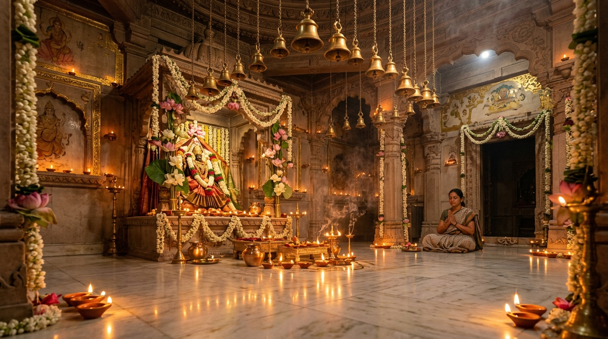

A divine refuge in Rupnagar (Ropar), Punjab consecrated for profound meditative stillness, Vedic Shastric rituals, and universal spiritual solace.

In an era of relentless modern hurry, digital distraction, and inner anxiety, Sukoon Temple was consecrated as a holy refuge where the human spirit can quieten, breathe, and immerse in authentic Sanatana peace.
Our sacred sanctum is alive with the resonant vibrations of Vedic chanting, aromatic camphor, pure cow ghee diyas, brass bell resonances, and uninterrupted traditional aartis. Whether you seek quiet meditation, accurate Vedic astrological guidance, or holy samskaras, Sukoon welcomes you with unconditional sacred grace.
Every havan, archana, and puja is executed strictly per authentic Shastric vidhi by traditional Brahmins trained in Vedic gurukuls.
Designed with sacred geometry and 432 Hz Solfeggio resonance to calm hyperactive nervous systems and facilitate dhyana.
Daily consecrated Mahaprasad distribution to pilgrims, Gau-Seva for sacred indigenous cows, and spiritual charity for all.